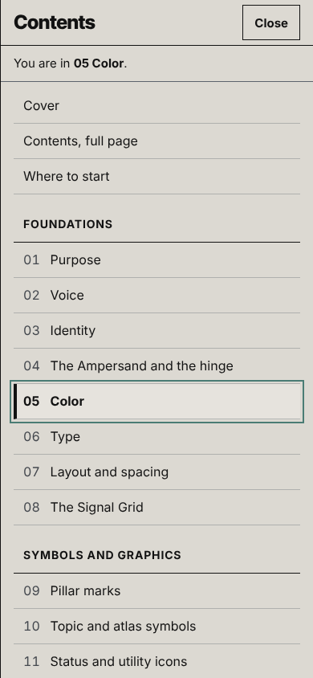
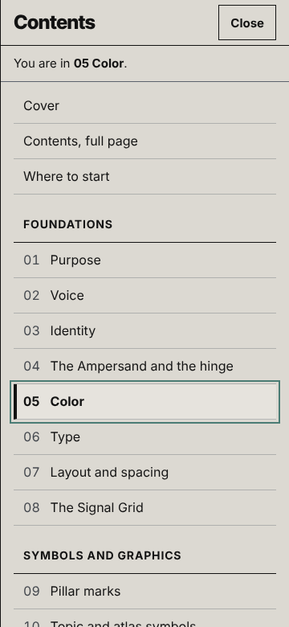
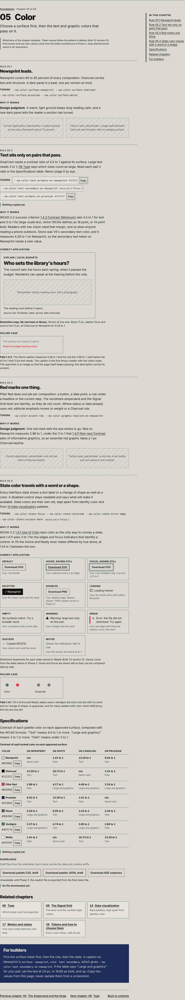

Gate 1 review board · Phase 1 · October 21, 2026
Navigation and template wireframes
How a reader moves through the Edition 06 guide, at desktop and phone widths, and how one chapter reads in the new template. Everything here is a working proposal. Nothing is built into V6.
1. The contents in six parts
Front matter (Cover, Contents, Where to start), 28 chapters numbered 01 to 28, and an unnumbered Closing. The parts follow Master Brief V2 section 7, with nine changes listed in the architecture map, section 3. The main ones: the Signal Grid gets its own chapter, Evidence and sourcing opens its part, Accessibility becomes chapter 19, the atlas gets chapter 21, and social and video share chapter 23.
Every V5 Polished section (18 of 18) and every V4.2 section (20 of 20) has a home, and all 104 V5 h3 headings appear in a mapping row. A script checks this: work/build/scripts/phase-1/ux_architecture_coverage.py.
| Part | No. | Chapter | Instruction line, draft for the editor |
|---|---|---|---|
| Foundations | 01 | Purpose | Learn what Oath & Action does and how the four pillars lead a reader from a question to a next step. |
| 02 | Voice | Write copy that sounds like Oath & Action, with the locked lines quoted exactly. | |
| 03 | Identity | Pick the right lockup for the surface and give the wordmark its clear space. | |
| 04 | The Ampersand and the hinge | Use the ampersand to join a promise to an action, once per composition. | |
| 05 | Color | Choose a surface first, then the text and graphic colors that pass on it. | |
| 06 | Type | Set every word at a readable size with the three faces and the type scale. | |
| 07 | Layout and spacing | Build pages on the column grid and spacing scale so the measure stays comfortable at every width. | |
| 08 | The Signal Grid | Place the lockmark in its sanctioned spots, and code content with it only where a key beside it lets a reader decode it. | |
| Symbols and graphics | 09 | Pillar marks | Mark which pillar a piece serves, always in the order Explain, Track, Connect, Act. |
| 10 | Topic and atlas symbols | Find the symbol for a subject or an atlas element and set it with its label. | |
| 11 | Status and utility icons | Show a record's state or an interface action with a glyph that never stands in for a topic. | |
| 12 | Graphic devices and patterns | Add dividers, frames, markers and watermarks only where they help someone read. | |
| Evidence and media | 13 | Evidence and sourcing | Say what kind of evidence a claim rests on, and put its source and any illustrative label beside it. |
| 14 | Data visualization | Start from the reader's question to choose a chart, then title it with the evidence it shows. | |
| 15 | Systems graphics | Draw causes, loops and authority from Atlas V7 so a reader can follow one link at a time. | |
| 16 | Photography, illustration and video | Show public life as it happens, and label every placeholder and generated image for what it is. | |
| Behavior | 17 | Motion and states | Keep motion under the reader's control, and give every state a word or a shape as well as a color. |
| 18 | Components and interaction | Build controls that work by keyboard and screen reader, with a status line for every change. | |
| 19 | Accessibility | Check a page against WCAG 2.2 AA before you call it finished. | |
| Applications | 20 | Web | Assemble the website mastheads, navigation, article pages, trackers and footer from the system. |
| 21 | The atlas | Apply the system to the atlas, its hardest test, with typed IDs and the evidence one step away. | |
| 22 | Newsletter and email | Build an email that reads well with images off and web fonts unavailable. | |
| 23 | Social and video | Size posts, covers and video frames to each platform's safe areas, with captions clear of the interface. | |
| 24 | Reports | Lay out a report page by page, from the cover to the source notes. | |
| 25 | Print and presentation | Produce one-pagers, letterhead, slides, event signs and merchandise at their print sizes. | |
| Production | 26 | Tokens and how to choose them | Pick a token by surface, then role, then state. |
| 27 | Assets and downloads | Download a master with a dated name and see which chapter governs it. | |
| 28 | Standards checklist | Run the checklist before anything is called final. |
2. The heading rule
Each chapter's h2 holds its number and name. The instruction sits beneath it as one sentence. Rules are h3s that start with their ID, and the template blocks inside a rule are visible labels. Phase 0 found that V5's slogan headings hide the chapter name from heading lists (WCAG 2.4.6 Headings and Labels, 1.3.1 Info and Relationships).
Heading list, V5: "Newsprint carries the conversation." The word Color is not in it.
Heading list, proposal: "05 Color", then "Rule 05.1 Newsprint leads.", "Rule 05.2 Text sits only on pairs that pass." and so on.
| Level | Holds | Example |
|---|---|---|
| h1 | The guide's title, once, on the cover | Oath & Action Brand Guide, Edition 06 |
| h2 | Chapter number and name; part openers; Contents; Where to start; Closing | 05 Color |
| Paragraph under the h2 | The instruction line | Choose a surface first, then the text and graphic colors that pass on it. |
| h3 | Each rule, with its ID; then Specifications, Related chapters, For builders | Rule 05.2 Text sits only on pairs that pass. |
| Label | Why it works; Correct application; Failure case; Tokens | Visible label above the block |
Rule IDs read "Rule 05.2": chapter 05, rule 2. They cannot collide with Atlas V7 IDs (A1, L01, R1, R-01, D01), which all start with a letter, and V6 uses no R prefix of its own. Anchors are words (#color), so a later renumbering breaks no link, and V5's anchors such as #grid still land on their new homes.
3. Navigation at 1440 px
The frame below is the working wireframe at its true width, 1440 by 900 CSS pixels, opened at 05 Color. Scroll inside it, use its links and Tab through it. Choose "Fit the frame to this window" to see all of it at once; the page inside still lays out at 1440.
- Skip links. "Skip to main content" and "Skip to contents" are the first two Tab stops and appear on focus.
- Part navigation. Six part links and Contents in the masthead. The current part carries a 3 px underline and
aria-current="location", which a screen reader announces as "current location". - Chapter rail. Every chapter is listed under its part. The current one gets a 4 px bar, bold type and a raised ground, so the marker survives grayscale and forced colors. The rail scrolls on its own and keeps the marker in view. V5 marked no link for its Systems chapter.
- Location line. "Foundations · Chapter 05 of 28" sits above every chapter's h2.
- In this chapter. A list of the chapter's rules and closers, in a right-hand column at 1280 px and wider, above the first rule on narrower screens.
- Cross-references. Inline references and the Related chapters block are links. After a jump, the target chapter shows "Return to …" beside its location line. The browser's Back button works too.
- Way back to the contents. Contents in the masthead, "Back to contents" at the end of every chapter, and the skip link.
- Focus. A link that lands on a chapter moves focus to its h2, so the next Tab continues from there. Focused items scroll clear of the sticky masthead (WCAG 2.4.11 Focus Not Obscured).
4. Navigation at 390 and 360 px
On phones the masthead keeps the wordmark, the current chapter's name and a Menu button. Menu opens a full-height contents panel that lists every link, Cover to Closing, with the current chapter marked and a line that says where you are. V5's phone strip hid two of seven links off screen at 360 px and gave no sign that it scrolled.
- The Menu button has a text label, is 44 px tall, and says it opens a dialog.
- The contents panel is a modal dialog named by its visible title, Contents. Focus moves to the current chapter's link. Tab stays inside the panel. Escape or Close returns focus to Menu.
- Every link shows. 37 links: Cover, the contents page, Where to start, six parts, 28 chapters and the Closing. Each row is at least 44 px tall and the panel scrolls up and down only.
- Choosing a link closes the panel, scrolls to the chapter and moves focus to its h2.
- The header name ("05 Color") updates as you scroll. Below 360 px it gives way to the Menu button; the location line under each h2 carries the same information.


5. The chapter template, applied to 05 Color
Color carries tokens, states and contrast, so it tests every block of the template in Master Brief V2 section 7. Four rules show the cycle: 05.2 and 05.4 in full, 05.1 and 05.3 with placeholders where their specimens go. All contrast figures are computed with the WCAG formula and match the brief's table.
| Template block | In 05 Color |
|---|---|
| 1. Opener | Location line, h2 "05 Color", the instruction line and the In this chapter list. |
| 2. The rule, with its tokens | Rules 05.1 to 05.4 as h3s. Token chips, with copy buttons where a value exists and "value set in Phase 2" where the token architecture still has to set one. |
| 3. Why it works | WCAG 1.4.3 and 1.4.1 for 05.2 and 05.4, linked to the W3C quick reference. "Design judgment" for 05.1 and 05.3. |
| 4. Correct application | 05.2: an article excerpt at true size with its measured ratios, labeled illustrative. 05.4: all eleven states from brief section 10, each with its word or shape cue. |
| 5. Failure case | 05.2: a Stone caption and a red link at 13 px on Newsprint. 05.4: V5's Active and Ready dots, in color and in grayscale. |
| 6. Specifications | The contrast table, seven colors on four surfaces, with copy buttons, and downloads with a status line. One download is disabled and says why. |
| 7. Cross-references | Inline links to 06 Type and 14 Data visualization, and a Related chapters block of five. |
| 8. For builders | Surface, then role, then state, with one worked example. |
Failure specimens are drawn as images with a text description beside them. The page then passes its own contrast checks while still showing the failure at true size. Correct applications stay live text.
Full-length stills of 05 Color at 1440 and 360 px

6. Interaction model
Four working patterns for 18 Components and interaction. Each change a control makes is written to a status line, a short sentence under the control that screen readers announce without moving focus (a polite live region, WCAG 4.1.3 Status Messages).
6.1 The report reader
V5's reader turned pages with the arrow keys anywhere in the dialog, so a keyboard user could not pan a page at full size, and reaching page 12 dropped focus to the page body (Phase 0 finding 3). Open any page below.
| Where focus is | Keys | What happens |
|---|---|---|
| Reader chrome: the title, Previous page, Next page or Close | ← → Page Up Page Down Home End | Turn pages, or go to the first or last page |
| The page | ← → ↑ ↓ | Scroll the page. Pages never turn from here |
| Zoom | ↑ ↓ | Change the zoom only |
| Anywhere | Esc | Close; focus returns to the page you opened |
- The visible title, "Page 5 of 12: Narrative page", names the dialog.
- At page 12, Next page stays focusable and is marked unavailable. Focus stays on it, and the status line says it is the last page.
- Thumbnail names start with their visible text, "05 Narrative page", then add "open in the reader" (WCAG 2.5.3 Label in Name).
6.2 Copy and download
V5 had no copy or download control. Each control here writes its result to a status line. A blocked clipboard falls back to a selected field and says so. The unavailable download stays focusable and says what will make it available.
--oa-color-pillar-red #E63946
Unavailable until Phase 5: PNG exports are made after the masters are approved.
Nothing copied or downloaded yet.
The SVG is the V5 Polished lockmark master, saved with a title, a desc and its internal ID oa-lockmark, as brief section 21 asks. File names carry the date and a status suffix.
6.3 A demo control with a status line
V5's tracker and composer changed state in silence. This pair checker, a candidate for 05 Color, names the new state each time a control changes. Its specimen is an image whose name carries the same information.
Ready.
6.4 Motion the reader controls
Motion starts only when the reader asks, never loops, and can be paused, stepped and reset. Still view shows every step at once and is the default when the reader's system asks for reduced motion. The sequence is V4.2's handoff diagram: illustrative process, no real town or office.
- 1ResidentAsks about the service hours.Now
- 2ClerkPlaces the question on an agenda.Later
- 3CouncilConsiders the request and the evidence.Later
- 4Council officePublishes the decision and its reasons.Later
Ready at step 1 of 4. Press Play or Step forward.
Timing: 2.5 seconds a step; the marker slides in 320 ms with V5's enter easing. Under reduced motion the marker jumps and Still view starts pressed. The steps keep their text in every view, so no state is hidden from a screen reader.
7. Checks run on these wireframes
Results are added after the check script runs.
Decisions for Gate 1
Each row is one decision, with the options and the studio's recommendation. The architecture rows repeat section 12 of the map.
Architecture
| # | Decision | Options | Recommendation |
|---|---|---|---|
| A1 | The contents | (a) Six parts and 28 chapters, as proposed. (b) The brief's starting map unchanged. | (a). Every V5 and V4.2 chapter has a home. |
| A2 | Layout and the Signal Grid | (a) Two chapters, 07 and 08. (b) One chapter. | (a). The encodings need room, and "The Grid" misled even the Phase 0 audit. |
| A3 | Where Evidence and sourcing sits | (a) First in its part. (b) Last. | (a). Charts and systems graphics take their title types from it. |
| A4 | Accessibility | (a) Chapter 19, in Behavior. (b) A chapter in Production. (c) No chapter. | (a). Its rules describe how the guide behaves. |
| A5 | The atlas | (a) 20 Web and 21 The atlas, with the system test inside 21. (b) "Web and atlas" plus "Atlas system test". | (a). The hardest application gets a chapter a reader can find. |
| A6 | Social and video | (a) One chapter, 23. (b) A separate Video frames chapter. | (a). One set of safe-area overlays. |
| A7 | Numbering and headings | (a) 01 to 28, word anchors, Rule 05.2 IDs, h2 "05 Color" with the instruction beneath. (b) Numbering within each part. | (a). Short citations that cannot collide with V7 IDs, and a clean outline. |
| A8 | History of a candidate line | V4.2 lists "From spectators to stewards." as a historical tagline "Retired from current applications." | Show that record beside the candidate-line decision on the strategy board. |
Navigation, template and interaction
| # | Decision | Options | Recommendation |
|---|---|---|---|
| N1 | Desktop navigation | (a) Part links in the masthead, a rail with every chapter and a current marker, and an In this chapter list. (b) A rail with only the current part. | (a). Every chapter is one click away and the marker is always in view. |
| N2 | Phone navigation | (a) Menu opens a full-height contents dialog with every link. (b) A panel that opens under the masthead. (c) V5's scrolling strip. | (a). All 37 links show, focus is managed, and Escape closes it. |
| N3 | Cross-references | (a) Linked references, a Return link after a jump, and a Related chapters block. (b) Related chapters block only. | (a). Readers who follow a reference can get back without hunting. |
| T1 | Chapter template | (a) The eight blocks in the brief's order, rules as h3s, failure specimens as images with a text description. (b) Failure specimens as live text, excluded from automated checks. | (a). The page keeps passing its own checks while it shows the failure. |
| I1 | Report reader keys | (a) Page keys on the reader chrome only, focus kept at the ends, visible title as the dialog name. (b) V5's behavior. | (a). Fixes WCAG 2.1.1 and 2.4.3 failures found at Gate 0. |
| I2 | Copy and download | (a) Status line for every result, a selected-field fallback, and unavailable actions that stay focusable and say why. (b) Buttons with no feedback. | (a). Every result is announced and visible. |
| I3 | Demos and motion | (a) One status line per demo; Play, Pause, Step forward, Reset and Still view; no autoplay; reduced motion opens on the still view. (b) Play once, as in V5. | (a). The reader controls every change and can see it at rest. |